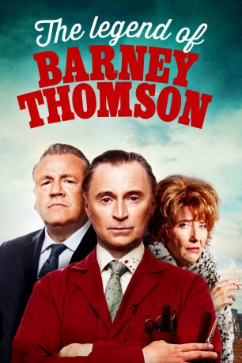

#6959 Die Legende von Barney Thomson
Alternativ: Barney Thomson (Englischer Titel)
Auszeichnungen: 2 BAFTA-Awards gewonnen
 
 IMDB-Wertung: 6.3 / 10
IMDB-Wertung: 6.3 / 10  Metascore: 0
Metascore: 0 
Barney Thompson, ein ungeschickter und schüchterner Barbier aus Glasgow, lebt ein Leben von verzweifelter Mittelmäßigkeit. Doch sein uninteressantes Leben ändert sich innerhalb von Sekunden, als er die groteske und comichaft absurde Welt eines Serienmörders betritt.
Jahr: 2015
Dauer: 92 Minuten
FSK: 16
Land: Kanada Studio: Universal PicturesTonspuren: DD5.1 - ,
Untertitel:
Auflösung: 1080p (1920x808) Größe: 7004 MB
Genre: Komödie, Krimi
Regisseur: Robert Carlyle
Drehbuch: Richard Cowan
Soundtrack:
Darsteller:
 Emma Thompson als Cemolina
Emma Thompson als Cemolina Robert Carlyle als Barney
Robert Carlyle als Barney James Cosmo als James Henderson
James Cosmo als James Henderson Ray Winstone als Holdall
Ray Winstone als Holdall Ashley Jensen als Detective Inspector June Robertson
Ashley Jensen als Detective Inspector June Robertson Martin Compston als Chris
Martin Compston als Chris Kevin Guthrie als MacPherson
Kevin Guthrie als MacPherson Tom Courtenay als Chief Superintendent McManaman
Tom Courtenay als Chief Superintendent McManaman Stephen McCole als Wullie
Stephen McCole als Wullie Brian Pettifer als Charlie
Brian Pettifer als Charlie- Samuel Robertson als Detective Sergeant Sam Jobson
- David McGowan als Alex
- Finlay Welsh als Jenkins
- James Casey als Customer 4
- David Speed als Detective
- Eileen McCallum als Mrs. Gaffney
- Barbara Rafferty als Jean Monkrieff
- Matt Costello als Chris' Creepy Neighbour
- Scott Dymond als Customer Number 1
- Ruari Cannon als Well Dressed Young Man
- Dolina MacLennan als Mrs. Kerr
- Anne Downie als Lizzie
- Sarah McCardie als Sheena
- Skye Cooper Barr als Margaret
- Peter Adams als Barber
- Nicola Roy als Sally
- Penny Lamb als Wife of Murdered Man
- Gareth.Mcinally als Police officer
- Jamie Merritt als Big eared customer
- Matthew Baxter als Customer 6 , uncredited
Datei: X:\2015(G-M)\Legende von Barney Thomson, Die (2015, FSK16, 1920x808).mkv seit 12.09.2017
Festplatte: HD 2015(A-Z)
 Es gibt insgesamt 129 Filme in der Gruppe '2015(G-M)'
Es gibt insgesamt 129 Filme in der Gruppe '2015(G-M)'